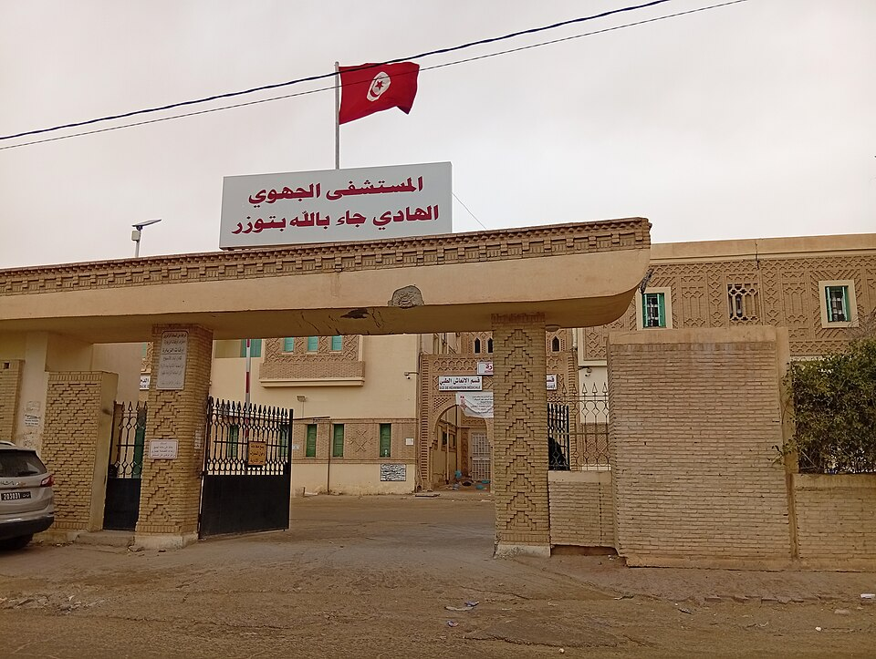

夫妻接力：半个世纪援突医疗的一个缩影
雷晓真去突尼斯那年，小儿子还不满周岁。两年后，换戴书明出发。


中国自1973年起向突尼斯派遣医疗队，此后陆续轮换的队员在医院工作，也承担基层义诊和当地医护培训。2019年11月，妇产科医生雷晓真出发赴突尼斯，担任第24批援突医疗队西迪布济德分队队长，那时小儿子还不满周岁。两年后，丈夫戴书明成为第26批医疗队坚杜拜分队的儿科医生；已经回国的雷晓真一边照顾家庭，一边把援突时积累的经验讲给丈夫听。
- 1973中国开始向突尼斯派遣医疗队。
- 2019雷晓真赴西迪布济德开展妇产科工作。
- 2021戴书明赴坚杜拜从事儿科诊疗。
- 2023报道时累计派出27批，诊疗610万余人次。
真实亲诚与长期合作
医疗队分批交接，持续在当地医院接诊和开展义诊。部分分队也做技术培训，针灸中心已有受训医生在突尼斯开展针灸诊疗。
援突医疗早在1973年起步，新时代延续了这项合作。雷晓真把经验讲给接着出发的丈夫，而当地医护学成后能自己接诊，让接力跨出了援外医疗队。